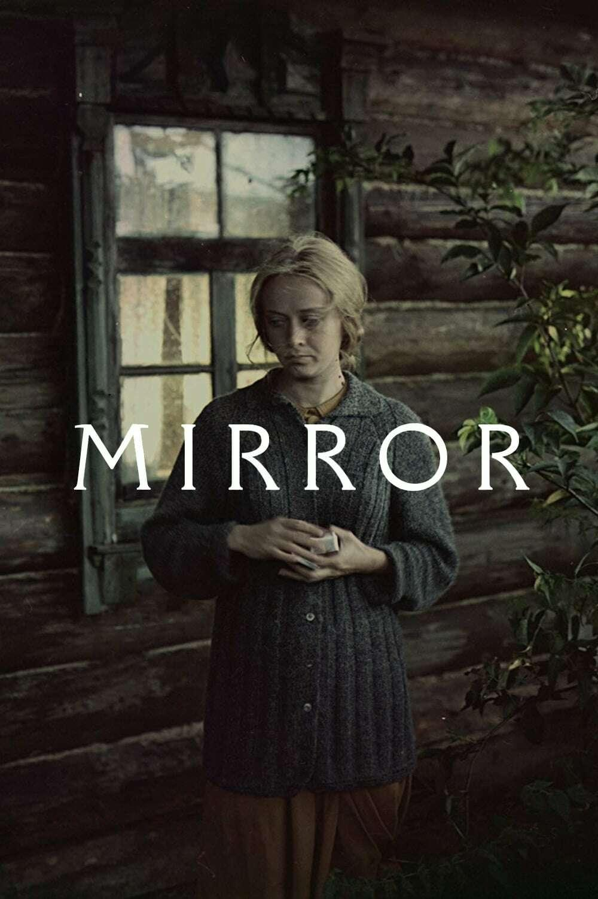
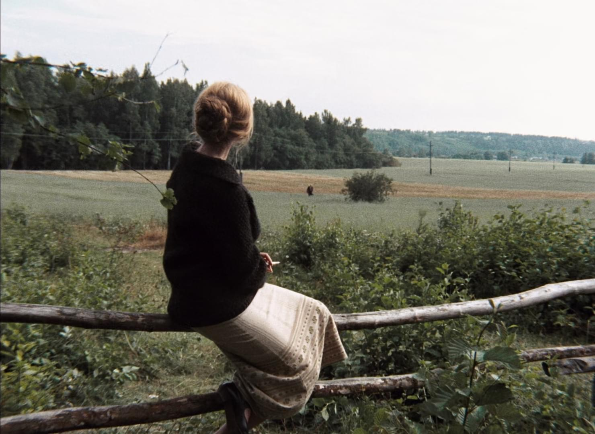

O Espelho
1975 'Зеркало' Dirigido por Andrei Tarkovsky
Um homem moribundo na casa dos quarenta recorda sua infância, sua mãe, a guerra e momentos pessoais que narram e juxtapõem momentos cruciais da história soviética com a vida cotidiana.
"A imagem poética mais clássica do cinema de Tarkovsky, Margarita Terekhova empoleirada em sua cerca de madeira olhando para o horizonte sem fim dos campos russos, segurando seu cigarro, esperando o retorno do seu ex-marido, mas ao mesmo tempo mergulhada na contemplação de um devaneio." - AvMakers